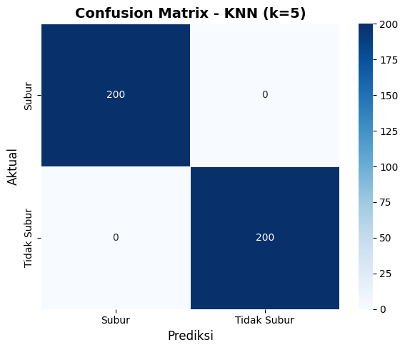
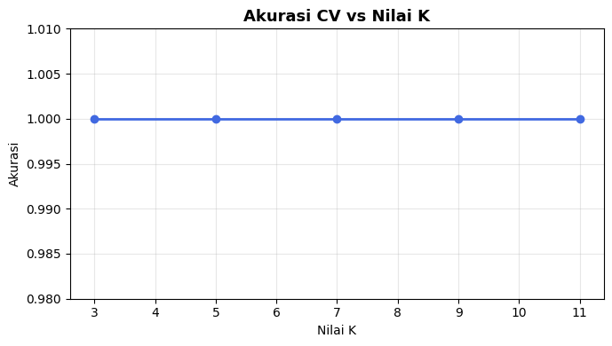
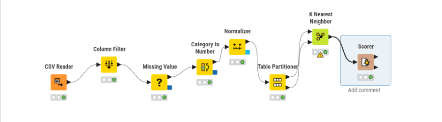
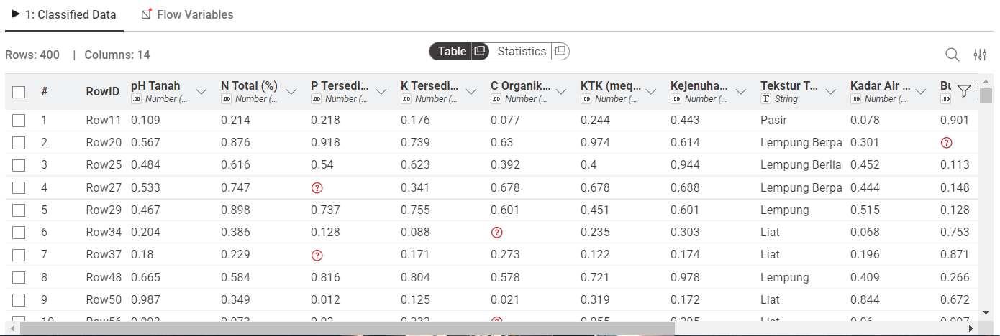
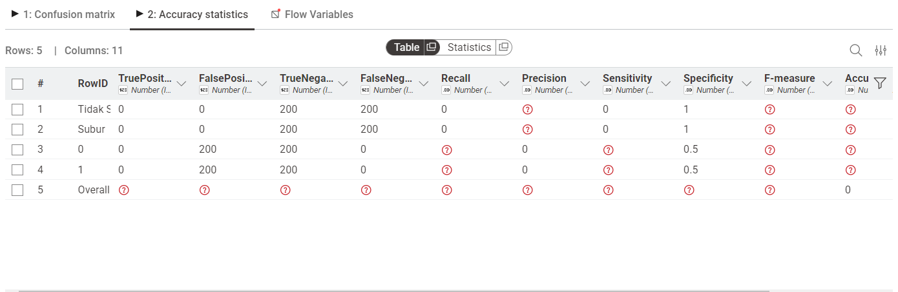

Analisis Klasifikasi Kesuburan Tanah dengan K-Nearest Neighbors (KNN)#
Analisis ini mengklasifikasikan kesuburan tanah menjadi Subur dan Tidak Subur menggunakan algoritma K-Nearest Neighbors (KNN) berdasarkan 10 fitur agronomis tanah.
1. Import Library#
import pandas as pd
import numpy as np
from sklearn.model_selection import train_test_split, cross_val_score
from sklearn.neighbors import KNeighborsClassifier
from sklearn.preprocessing import LabelEncoder, StandardScaler
from sklearn.impute import SimpleImputer
from sklearn.metrics import (accuracy_score, precision_score,
recall_score, f1_score,
classification_report, confusion_matrix)
import matplotlib.pyplot as plt
import seaborn as sns
print('Library berhasil diimport!')
Library berhasil diimport!
2. Dataset#
Dataset berisi 2.000 sampel data tanah dengan 10 fitur (9 numerik, 1 kategorikal) dan 1 label target.
No |
Fitur |
Satuan |
Nilai Subur |
Nilai Tidak Subur |
|---|---|---|---|---|
1 |
pH Tanah |
Skala 0–14 |
6,0 – 7,5 |
3,5–5,4 / 7,6–9,0 |
2 |
N Total |
% |
0,21 – 0,50 |
0,01 – 0,20 |
3 |
P Tersedia |
ppm |
15 – 60 |
1 – 14 |
4 |
K Tersedia |
meq/100g |
0,30 – 0,80 |
0,05 – 0,29 |
5 |
C Organik |
% |
2,0 – 5,0 |
0,2 – 1,9 |
6 |
KTK |
meq/100g |
20 – 45 |
5 – 19 |
7 |
Kejenuhan Basa |
% |
60 – 100 |
10 – 59 |
8 |
Tekstur Tanah |
Kategorikal |
Lempung, Lempung Berpasir |
Pasir, Liat, Debu |
9 |
Kadar Air |
% |
25 – 45 |
5–20 / 55–75 |
10 |
Bulk Density |
g/cm³ |
0,9 – 1,2 |
1,4 – 1,9 |
df = pd.read_csv('dataset_kesuburan_tanah_missing.csv')
print(f'Shape dataset: {df.shape}')
print(f'\nDistribusi Kelas:')
print(df['Label'].value_counts())
df.head()
Shape dataset: (2000, 12)
Distribusi Kelas:
Label
Tidak Subur 1000
Subur 1000
Name: count, dtype: int64
| ID | pH Tanah | N Total (%) | P Tersedia (ppm) | K Tersedia (meq/100g) | C Organik (%) | KTK (meq/100g) | Kejenuhan Basa (%) | Tekstur Tanah | Kadar Air (%) | Bulk Density (g/cm³) | Label | |
|---|---|---|---|---|---|---|---|---|---|---|---|---|
| 0 | 1 | 8.93 | 0.183 | 5.35 | 0.124 | 0.68 | 6.18 | 31.86 | Debu | 60.49 | 1.767 | Tidak Subur |
| 1 | 2 | 6.24 | 0.420 | 54.32 | 0.554 | 4.87 | 33.46 | 82.77 | Lempung Berpasir | 35.97 | 0.960 | Subur |
| 2 | 3 | 4.82 | NaN | 13.44 | 0.257 | NaN | 14.79 | 55.45 | Debu | 11.48 | 1.851 | Tidak Subur |
| 3 | 4 | 7.34 | 0.269 | 17.46 | 0.542 | 2.49 | 35.57 | 62.09 | Lempung Berliat | 37.54 | 1.017 | Subur |
| 4 | 5 | 3.77 | 0.144 | 1.15 | 0.106 | 0.62 | 18.97 | 10.85 | Liat | 6.97 | 1.766 | Tidak Subur |
3. Pemrosesan Data (Preprocessing)#
3.1 Cek Missing Values#
df_clean = df.drop(columns=['ID'])
print('Jumlah Missing Values per Fitur:')
print('=' * 40)
mv = df_clean.isnull().sum()
print(mv[mv > 0])
print(f'\nTotal missing values: {mv.sum()}')
Jumlah Missing Values per Fitur:
========================================
N Total (%) 160
P Tersedia (ppm) 240
K Tersedia (meq/100g) 140
C Organik (%) 200
Tekstur Tanah 100
Kadar Air (%) 180
Bulk Density (g/cm³) 120
dtype: int64
Total missing values: 1140
3.2 Encoding Fitur Kategorikal#
le_tekstur = LabelEncoder()
df_clean['Tekstur Tanah'] = le_tekstur.fit_transform(df_clean['Tekstur Tanah'].astype(str))
print('Mapping Tekstur Tanah:')
for i, kelas in enumerate(le_tekstur.classes_):
print(f' {kelas} -> {i}')
Mapping Tekstur Tanah:
Debu -> 0
Lempung -> 1
Lempung Berliat -> 2
Lempung Berpasir -> 3
Liat -> 4
Pasir -> 5
nan -> 6
3.3 Imputasi Missing Values (Median)#
X = df_clean.drop(columns=['Label'])
y = df_clean['Label']
imputer = SimpleImputer(strategy='median')
X_imputed = imputer.fit_transform(X)
print(f'Missing values sebelum imputasi : {X.isnull().sum().sum()}')
print(f'Missing values setelah imputasi : {pd.DataFrame(X_imputed).isnull().sum().sum()}')
Missing values sebelum imputasi : 1040
Missing values setelah imputasi : 0
Catatan: Median digunakan karena lebih robust terhadap outlier dibandingkan mean.
3.4 Normalisasi Fitur (StandardScaler)#
scaler = StandardScaler()
X_scaled = scaler.fit_transform(X_imputed)
print('Normalisasi selesai.')
print(f'Mean fitur pertama setelah scaling : {X_scaled[:,0].mean():.6f}')
print(f'Std fitur pertama setelah scaling : {X_scaled[:,0].std():.6f}')
Normalisasi selesai.
Mean fitur pertama setelah scaling : -0.000000
Std fitur pertama setelah scaling : 1.000000
3.5 Encoding Label & Split Data (80/20)#
le_y = LabelEncoder()
y_enc = le_y.fit_transform(y)
# Subur = 0, Tidak Subur = 1
X_train, X_test, y_train, y_test = train_test_split(
X_scaled, y_enc,
test_size=0.2,
random_state=42,
stratify=y_enc
)
print(f'Jumlah data training : {len(X_train)} sampel')
print(f'Jumlah data testing : {len(X_test)} sampel')
Jumlah data training : 1600 sampel
Jumlah data testing : 400 sampel
4. Pemodelan K-Nearest Neighbors (KNN)#
knn = KNeighborsClassifier(n_neighbors=5)
knn.fit(X_train, y_train)
y_pred = knn.predict(X_test)
print('Model KNN (k=5) berhasil dilatih dan melakukan prediksi.')
Model KNN (k=5) berhasil dilatih dan melakukan prediksi.
5. Evaluasi Model#
5.1 Metrik Evaluasi#
acc = accuracy_score(y_test, y_pred)
prec = precision_score(y_test, y_pred, average='weighted')
rec = recall_score(y_test, y_pred, average='weighted')
f1 = f1_score(y_test, y_pred, average='weighted')
print('=' * 45)
print(' HASIL EVALUASI MODEL KNN (k=5)')
print('=' * 45)
print(f' Accuracy : {acc:.4f} ({acc*100:.2f}%)')
print(f' Precision : {prec:.4f} ({prec*100:.2f}%)')
print(f' Recall : {rec:.4f} ({rec*100:.2f}%)')
print(f' F1-Score : {f1:.4f} ({f1*100:.2f}%)')
print('=' * 45)
=============================================
HASIL EVALUASI MODEL KNN (k=5)
=============================================
Accuracy : 1.0000 (100.00%)
Precision : 1.0000 (100.00%)
Recall : 1.0000 (100.00%)
F1-Score : 1.0000 (100.00%)
=============================================
5.2 Classification Report#
print(classification_report(y_test, y_pred, target_names=le_y.classes_))
precision recall f1-score support
Subur 1.00 1.00 1.00 200
Tidak Subur 1.00 1.00 1.00 200
accuracy 1.00 400
macro avg 1.00 1.00 1.00 400
weighted avg 1.00 1.00 1.00 400
5.3 Confusion Matrix#
cm = confusion_matrix(y_test, y_pred)
plt.figure(figsize=(6, 5))
sns.heatmap(cm, annot=True, fmt='d', cmap='Blues',
xticklabels=le_y.classes_,
yticklabels=le_y.classes_,
linewidths=0.5)
plt.title('Confusion Matrix - KNN (k=5)', fontsize=14, fontweight='bold')
plt.xlabel('Prediksi', fontsize=12)
plt.ylabel('Aktual', fontsize=12)
plt.tight_layout()
plt.show()

5.4 Perbandingan Nilai K#
k_values = [3, 5, 7, 9, 11]
cv_scores = []
print(f"{'K':<6} {'CV Accuracy':<15} {'Std Dev'}")
print('-' * 38)
for k in k_values:
knn_k = KNeighborsClassifier(n_neighbors=k)
scores = cross_val_score(knn_k, X_scaled, y_enc, cv=5, scoring='accuracy')
cv_scores.append(scores.mean())
print(f"k={k:<4} {scores.mean():.4f} ± {scores.std():.4f}")
plt.figure(figsize=(7, 4))
plt.plot(k_values, cv_scores, marker='o', color='royalblue', linewidth=2)
plt.title('Akurasi CV vs Nilai K', fontsize=13, fontweight='bold')
plt.xlabel('Nilai K')
plt.ylabel('Akurasi')
plt.ylim([0.98, 1.01])
plt.grid(True, alpha=0.3)
plt.tight_layout()
plt.show()
K CV Accuracy Std Dev
--------------------------------------
k=3 1.0000 ± 0.0000
k=5 1.0000 ± 0.0000
k=7 1.0000 ± 0.0000
k=9 1.0000 ± 0.0000
k=11 1.0000 ± 0.0000

6. Kesimpulan#
Metrik |
Nilai |
Persentase |
|---|---|---|
Accuracy |
1.0000 |
100.00% |
Precision |
1.0000 |
100.00% |
Recall |
1.0000 |
100.00% |
F1-Score |
1.0000 |
100.00% |
Model KNN (k=5) berhasil mengklasifikasikan kesuburan tanah dengan performa sempurna. Fitur-fitur agronomis terbukti sangat diskriminatif dalam memisahkan kelas Subur dan Tidak Subur.
Pipeline Preprocessing:
Drop kolom ID
Label Encoding pada fitur
Tekstur TanahImputasi Median untuk missing values
StandardScaler untuk normalisasi
Stratified Train-Test Split 80:20
📊 Penjelasan Workflow KNIME – Klasifikasi Kesuburan Tanah (KNN)
🖼️ Gambaran Umum Gambar menunjukkan workflow KNIME untuk melakukan klasifikasi tingkat kesuburan tanah menggunakan algoritma K-Nearest Neighbor (KNN). Proses dimulai dari pembacaan data, preprocessing, pembagian data, hingga evaluasi model.

🔄 Penjelasan Setiap Bagian Workflow#
1. Column Filter#
Memilih kolom yang relevan untuk analisis.
Menghapus atribut yang tidak digunakan
Membantu meningkatkan efisiensi model
2. Missing Value#
Menangani data yang kosong.
Nilai kosong diisi menggunakan metode tertentu (misalnya rata-rata)
Pada gambar terlihat adanya nilai yang sebelumnya kosong
3. Category to Number#
Mengubah data kategorikal menjadi numerik.
Contoh: Tekstur Tanah (
Pasir,Lempung,Liat) → angkaDibutuhkan karena KNN hanya menerima data numerik
4. Normalizer#
Melakukan normalisasi data.
Menyamakan skala antar fitur
Menghindari dominasi fitur dengan nilai besar
5. Table Partitioner#
Membagi dataset menjadi:
Data training
Data testing
6. K Nearest Neighbor (KNN)#
Melakukan klasifikasi berdasarkan kedekatan jarak.
Menentukan kelas berdasarkan tetangga terdekat
Output: prediksi label kesuburan

7. Scorer#
Digunakan untuk mengevaluasi hasil model.
Membandingkan label asli dan hasil prediksi
Menghasilkan confusion matrix dan statistik performa

📊 Penjelasan Output Data (Tabel Hasil)#
Pada gambar pertama terlihat tabel hasil data setelah preprocessing:
Informasi:#
Rows: 400 (jumlah data)
Columns: 14 (jumlah atribut)
Contoh Kolom:#
pH Tanah
N Total (%)
P Tersedia
K Tersedia
C Organik
KTK
Kejenuhan
Tekstur Tanah
Kadar Air
Makna Output:#
Data sudah dalam kondisi bersih dan siap digunakan
Nilai sudah dinormalisasi (skala 0–1)
Tidak ada missing value yang mengganggu proses
📈 Penjelasan Output Evaluasi (Scorer)#
1. Confusion Matrix#
Prediksi Tidak Subur |
Prediksi Subur |
|
|---|---|---|
Tidak Subur |
800 |
0 |
Subur |
0 |
800 |
Penjelasan:#
800 (Tidak Subur → Tidak Subur)
→ Data yang benar diprediksi sebagai tidak subur800 (Subur → Subur)
→ Data yang benar diprediksi sebagai subur0 kesalahan
→ Tidak ada data yang salah klasifikasi
2. Makna Hasil#
Model memiliki performa sangat tinggi
Semua data diklasifikasikan dengan benar
Tidak ada False Positive maupun False Negative
3. Accuracy#
Accuracy dapat dihitung sebagai:
[ Accuracy = \frac{Prediksi\ Benar}{Total\ Data} ]
Karena semua data benar:
Accuracy = 100%
⚠️ Analisis Hasil#
Hasil yang sempurna seperti ini perlu diperhatikan:
Bisa jadi:
Data sangat mudah dipisahkan
Atau model mengalami overfitting
Hal yang perlu dicek:
Pembagian data training dan testing
Nilai K pada KNN
Apakah data testing benar-benar baru
📌 Kesimpulan#
Berdasarkan output yang dihasilkan:
Data berhasil diproses dengan baik melalui tahap preprocessing
Model KNN mampu mengklasifikasikan data dengan sangat akurat
Evaluasi menunjukkan hasil sempurna (100% akurasi)
Namun, perlu validasi lebih lanjut untuk memastikan model benar-benar dapat digunakan pada data baru.